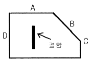
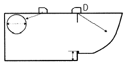
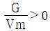
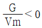
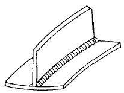

초음파비파괴검사기능사 (2001-10-14 기출문제)
1과목: 초음파탐상시험법
1. 침투탐상시험시 침투액을 용제세척하고 현상 처리후 건조처리를 해야 하는 현상법은?
- 건식현상법
- 무현상법
- 속건식현상법
- 습식현상법
(정답률: 알수없음)

2. 일반적으로 경계면에 수직으로 음파가 입사할 때 음파는 경계면에서 반사하는 성분과 통과하는 성분으로 나뉘어진다. 이 두개로 나뉘어지는 비율은 경계면에 접하는 두 물질의 무엇에 따라 정해지는가?
- 불감대
- 근거리 음장
- 증폭직진성
- 음향 임피던스
(정답률: 알수없음)
3. 다음 물질중 횡파와 종파가 공존할 수 있는 것은?
- 공기
- 글리세린
- 아크릴 수지
- 물(20℃)
(정답률: 알수없음)
4. 다음 중에서 분해능이 가장 우수한 주파수는?
- 1MHz
- 2.5MHz
- 5MHz
- 25MHz
(정답률: 알수없음)
5. 다음 중 모든 조건이 동일할 때 속도가 제일 빠른 초음파의 진동 모드는?
- 횡파
- 종파
- 표면파
- 전단파
(정답률: 알수없음)
6. 종파속도가 6,000m/sec이고 주파수가 5MHz인 경우 파장은 얼마인가?
- 1.2m
- 1.2cm
- 1.2mm
- 0.12mm
(정답률: 알수없음)
7. 초음파를 발생시키기 위해 사용하는 압전효과를 가진 물질을 무엇이라 하는가?
- 흡수 물질
- 합성 수지
- 진동자
- 접촉 매질
(정답률: 알수없음)
8. 다음 중 티탄산 바륨 진동자의 특징은?
- 사용수명이 길다.
- 물리적 강도가 강하다.
- 진동양식의 변환이 낮다.
- 송신효율이 좋다.
(정답률: 알수없음)
9. 초음파탐상시험시 송신 펄스만이 나타나고 수신 신호가 나타나지 않았다면 이 고장의 원인은?
- 퓨즈가 끊어짐
- 송신관 고장
- 전원전압 저하
- 동축케이블 접선불량
(정답률: 알수없음)
10. 다음 중 초음파탐상장치의 기본 구조에 속하는 것은?
- 탐촉자, 동축케이블, 전원부
- 탐촉자, 기록장치, 주유기
- 기록장치, 주유기, 전원부
- 주유기, 전원부, 선별장치
(정답률: 알수없음)
11. 초음파탐상시험에서 CRT 브라운관 상에 나타난 지시를 이동하여 원점과 일치시키기 위해 좌우로 이동하는 것을 무엇이라 하는가?
- Range
- Sweep delay
- Marker
- DAC
(정답률: 알수없음)
12. 초음파탐상기에서 이득(gain) 손잡이를 이용하여 어떤 에코의 높이를 6㏈ 내렸을 때 이 에코 높이의 변화는?
- 처음 에코의 1/4배로 내려간다.
- 처음 에코의 1/2배로 내려간다.
- 처음 에코의 2배로 올라간다.
- 처음 에코의 4배로 올라간다.
(정답률: 알수없음)
13. 초음파탐상시험시 잡음 에코를 제거하는 방법으로 올바른 것은?
- 주파수를 높여준다
- 감도를 높여준다.
- 주파수를 낮춰준다.
- 일정시간이 지나면 자연적으로 없어진다.
(정답률: 알수없음)
14. 초음파탐상시험에서 다음 중 단조품으로 된 회전축류의 전부분을 시험하기에 가장 효과적인 장치는?
- 투과법 장치
- 수침법 장치
- 공진법 장치
- 표면파법 장치
(정답률: 알수없음)
15. 자분탐상시험시 다음 중 제일 잘 발견되는 결함은?
- 표면의 미세한 기공
- 표면의 긴 균열
- 내부의 균열
- 표면하의 융합부족
(정답률: 알수없음)
16. 다른 비파괴검사법과 비교하였을 때 와전류탐상시험의 장점이 아닌 것은?
- 시험을 자동화할 수 있다.
- 비접촉법으로 할 수 있다.
- 시험체의 도금두께 측정이 가능하다.
- 형상이 복잡한 것도 쉽게 검사할 수 있다.
(정답률: 알수없음)
17. 방사선투과시험시 농도가 짙은 사진이 나오는 일반적인 이유 두가지는?
- 불충분한 세척과 과현상
- 오염된 정착액과 불충분한 세척
- 초과 노출과 오염된 정착
- 초과 노출과 과현상
(정답률: 알수없음)
18. 선원-필름간 거리가 4feet일 때 노출시간이 60초 였다면 다른 조건은 변하지 않을 때 2feet에서의 노출시간은 얼마로 해야 하는가?
- 15초
- 30초
- 120초
- 240초
(정답률: 알수없음)
19. 다른 비파괴검사법과 비교하여 자분탐상시험의 장점이 아닌 것은?
- 모든 재료에의 적용이 가능하다.
- 작업이 신속 간단하다.
- 결함모양이 표면에 직접 나타나 육안으로 관찰할 수 있다.
- 표면 균열검사에 적합하다.
(정답률: 알수없음)
20. 표준시험편(STB-A1)에 수직탐촉자로 거리 교정한 장비로 음속 5500m/s인 검사체를 측정하니 빔 거리 40mm로 측정되었다면 실제 검사체의 두께는? (단, STB-A1 종파속도는 5900m/s이다.)
- 37mm
- 40mm
- 42mm
- 45mm
(정답률: 알수없음)
2과목: 초음파탐상관련규격
21. 그림과 같이 결함이 존재할 때 수직탐상법으로 결함을 가장 잘 검출할 수 있는 방향은?

- A
- B
- C
- D
(정답률: 알수없음)
22. 초음파탐상검사 중 일반적으로 결함을 검출할 때 가장 많이 사용하는 방법은?
- 펄스반사법
- 투과법
- 공진법
- 주파수 해석법
(정답률: 알수없음)
23. 초음파가 물에서 알루미늄으로 12˚의 입사각으로 입사하면 알루미늄 내에서의 굴절각 sinθ 값은? (단, 물 속에서 초음파의 속도는 1500㎧, 알루미늄 내에서 초음파의 속도는 3000㎧이며, sin12˚= 0.2로 한다.)
- 0.1
- 0.2
- 0.3
- 0.4
(정답률: 알수없음)
24. 초음파탐상시험에서 다음 중 초음파의 진행에 영향을 미치는 요인중에서 그 효과가 가장 적은 것은?
- 표면거칠기
- 시험편의 크기
- 결정입자의 크기
- 불연속의 방향과 위치
(정답률: 알수없음)
25. 다음 중 경사각탐상에 대한 설명으로 틀린 것은?
- 음파를 입사표면에 대해 경사지게 보낸다.
- 입사각이 제2임계각이 되도록 한다.
- 횡파 경사각탐상이라도 진동자는 종파를 발생시킨다.
- 주로 용접부 및 관재의 내부결함 검출에 사용된다.
(정답률: 알수없음)
26. KS B 0831에서 STB-G 표준시험편의 검정장치에 대한 설명으로 틀린 것은?
- 탐촉자의 종류는 수직탐촉자이다.
- 탐촉자의 진동자 재료는 수정이다.
- 탐촉자의 진동자 치수는 10×10mm이다.
- 접촉 매질은 스핀들유이다.
(정답률: 알수없음)
27. KS 규격의 압력용기용 강판의 초음파탐상검사에 추천하는 탐촉자는?
- 경사각 탐촉자 및 수직탐촉자
- 분할형 경사각 탐촉자 및 수직탐촉자
- 이진동자수직탐촉자 및 수직탐촉자
- 경사각 탐촉자 및 분할형 수직탐촉자
(정답률: 알수없음)
28. 탐상거리 500mm의 강단조품을 탐상하려면 반드시 준비해야 할 표준시험편은?
- STB-A1
- STB-A2
- STB-N1
- STB-G
(정답률: 알수없음)
29. KS B 0897에서 경사각탐촉자의 사용조건중 주파수 및 진동자에 대하여 올바르게 규정하고 있는 것은?
- 공칭주파수 2.25MHz, 진동자 치수는 10×10mm
- 공칭주파수 5MHz, 진동자 치수는 10×10mm
- 공칭주파수 2.25MHz, 진동자 치수는 10×20mm
- 공칭주파수 5MHz, 진동자 치수는 10×20mm
(정답률: 알수없음)
30. KS B 0896에 의한 흠 분류시 L검출레벨의 경우 Ⅱ에코높이의 영역구분일 때 판두께 64mm인 맞대기 용접부의 흠의 분류가 2류라면 흠의 지시길이는 몇 mm이하로 규정하고 있는가?
- 18mm
- 20mm
- 30mm
- 60mm
(정답률: 알수없음)
31. KS D 0233에 따른 압력용기용 강판의 초음파탐상시험시 결함의 분류중 이진동자 수직탐촉자에 의한 경우의 표시기호와 분류 설명중 잘못된 내용은? (단, X주사)
- 결함의 정도가 가벼울 때 표시기호는 ○을 붙인다.
- 결함의 정도가 중간일 때 표시기호는 △로 붙인다.
- DM선을 넘고 DH선이하의 분류시 중간 결함으로 한다.
- DN선을 넘어서는 분류는 대상에서 제외시킨다.
(정답률: 알수없음)
32. KS B 0896에서 사용하는 경사각탐촉자의 원거리 분해능에 대한 점검시기 규정은?
- 작업시간 8시간 이내마다 또 보수를 한 직후
- 구입시 및 보수를 한 직후
- 의무적으로 2개월에 한번
- 작업시작시마다 또는 3개월에 한번
(정답률: 알수없음)
33. KS B 0817에 따른 초음파탐상시험시 시험의 결과를 평가하는 경우 고려할 항목이 아닌 것은?
- 흠집의 에코 높이
- 등가 결함 지름
- 흠집의 지시 길이
- 표준시험편의 감도
(정답률: 알수없음)
34. KS B 0817의 펄스반사법에 따른 초음파탐상 시험방법 통칙에 의거 다음 중 탐상도형을 표시하는 기본기호와 설명이 틀리게 연결된 것은?
- 측면 에코 : W
- 표면 에코 : S
- 송신 펼스 : T
- 흠집 에코 : E
(정답률: 알수없음)
35. KS B ⑤35에 의한 탐촉자 표시방법이 5Z10×10A70AL와 같이 되어 있었다. 여기서 AL 이 의미하는 것은?
- 검사체 재질
- 진동자 재질
- 쐐기의 재질
- 접촉 매질
(정답률: 알수없음)
36. KS D 0040에서 2진동자 수직탐촉자를 사용한 자동 탐상기는 언제 성능을 검정하도록 규정하고 있는가?
- 1년이내에 2회
- 1년이내에 1회
- 2년이내에 1회
- 3년이내에 1회
(정답률: 알수없음)
37. KS D 0233에서 A스코프 2진동자 수직탐촉자를 사용하는 경우 DC선을 결정하는 방법은?
- 강판이 6mm이상 20mm이하일 때 DM선에서 12dB낮은 선
- 강판이 20mm초과 80mm이하일 때 DM선에서 12dB낮은 선
- 강판이 20mm초과 80mm이하일 때 10dB 낮은 선
- 강판이 6mm이상 20mm이하일 때 DM선에서 10dB낮은 선
(정답률: 알수없음)
38. KS D 0040에서 탐상할 재료의 두께가 25mm일 때 2진동자 수직탐촉자의 공칭 주파수로 규정한 것은?
- 1MHz
- 10MHz
- 2.25MHz
- 5MHz
(정답률: 알수없음)
39. KS B 0831에 의한 G형 표준시험편(STB-G) 중의 V15 시리즈는 표준 구멍의 반경이 몇 배씩 변하는가?
- 2배
- 1.4배
- 0.71배
- 4배
(정답률: 알수없음)
40. 그림은 STB-A1 시험편이다. 다음 중 "D"의 용도는?

- 종합적 확인
- 감도 조정
- 입사점 측정
- 굴절각 측정
(정답률: 알수없음)
3과목: 금속재료일반 및 용접일반
41. KS D 0233에 의한 압력용기용 강판의 초음파탐상검사방법에서 일반 압력용기의 탐상시 탐상위치와 검사구분은?
- 원칙적으로 가로.세로 200mm 피치선상 : A형
- 가로 또는 세로 200mm 피치선상 : B형
- 원주변 50mm이내 : C형
- 그루브 예정선을 중심으로 하여 양측 25mm이내 : D형
(정답률: 알수없음)
42. 용융금속이 주형에서 응고할 때 용융점이 내부로 전달되는 속도를 Vm 이라 하고 결정 입자 성장 속도를 G 라 하면 주상(columnar)결정입자가 생기기 위한 조건은?
- G ≥ Vm
- G ≤ Vm


(정답률: 알수없음)
43. 비중(specific gravity)이 가장 가벼운 금속은?
- Mg
- Cr
- Mn
- Pb
(정답률: 알수없음)
44. 면심입방격자의 표시는?
- FCC
- LPG
- CCP
- CDP
(정답률: 알수없음)
45. 산소와의 친화력이 가장 큰 것은?
- 은
- 금
- 백금
- 니켈
(정답률: 알수없음)
46. 경도시험법중에서 B 스케일, C 스케일이 있고 강구(Steel ball)와 다이아몬드 압입자를 사용하는 시험 방법은?
- 로크웰 경도시험법
- 비커스 경도시험법
- 브리넬 경도시험법
- 쇼어 경도시험법
(정답률: 알수없음)
47. 고급 주철의 인장강도(kgf/mm2)는 얼마 정도인가?
- 0 – 5
- 5 - 10
- 10 – 15
- 30 이상
(정답률: 알수없음)
48. 탄소 0.1%, 크롬 18%, 니켈 8% 나머지 철을 주성분으로 한 금속재료는?
- 실루민
- 활자 합금
- 고속도강
- 스테인리스강
(정답률: 알수없음)
49. 스프링강의 기본적인 조직으로 적합한 것은?
- 펄라이트(pearlite)
- 시멘타이트(cementite)
- 솔바이트(sorbite)
- 페라이트(ferrite)
(정답률: 알수없음)
50. 포금(gun metal)이란?
- Mg 에 8-12[%] Sn와 소량의 Pb를 넣은것
- Aℓ에 8-12[%] Zn과 소량의 Sn을 넣은것
- Ag 에 10-15[%] Zn과 1[%] Aℓ을 넣은것
- Cu 에 8-12[%] Sn과 1-2[%] Zn을 넣은것
(정답률: 알수없음)
51. 강에서 탈산제로 사용되며 황의 악 영향을 제거하는데 가장 효과적인 것은?
- P
- Co
- Fe
- Mn
(정답률: 알수없음)
52. 열전도율이 가장 큰 금속은?
- Au
- Ag
- Fe
- Pb
(정답률: 알수없음)
53. 고속도공구강 및 합금공구강의 경도 증가를 위한 열처리 시험방법으로 맞는 것은?
- 서냉법
- 조미니법
- 담금질법
- 산화법
(정답률: 알수없음)
54. 피복아크 용접봉의 피복제 역할 설명 중 잘못된 것은?
- 전기전도를 양호하게 한다.
- 파형이 고운 비드를 만든다.
- 급냉을 방지한다.
- 스패터를 적게한다.
(정답률: 알수없음)
55. 일반적인 가스용접을 할 때, 불꽃의 종류에 따른 피용접 금속과의 관계로 틀린 것은?
- 연강 - 중성 불꽃
- 스테인리스강 - 산화 불꽃
- 황동 - 산화 불꽃
- 알루미늄 - 중성 불꽃
(정답률: 알수없음)
56. 용접 후 그림과 같은 용접 변형이 생겼을 때, 무슨 변형이라 하는가?

- 비틀림변형
- 회전변형
- 세로굽힘변형
- 좌굴변형
(정답률: 알수없음)
57. 다음 중 언어 프로세서에 속하지 않는 프로그램은?
- 컴파일러
- 어셈블러
- 인터프리터
- 라이브러리
(정답률: 알수없음)
58. 유닉스 시스템에서 파일 f1을 삭제하는 명령어는?
- rmdir f1
- rm f1
- delete f1
- remove f1
(정답률: 알수없음)
59. 다음 중 인터넷 주소를 도메인 이름으로 변경시켜 주는 것은?
- 게이트웨이(Gateway)
- 메일 서버
- URL(Uniform Resource Location)
- DNS(Domain Name Server)
(정답률: 알수없음)
60. 웹에서 홈페이지를 찾고자 할 때 무엇을 사용하여 찾아야 하는가?
- 즐겨찾기
- 검색엔진
- 목록보기
- 인터넷옵션
(정답률: 알수없음)